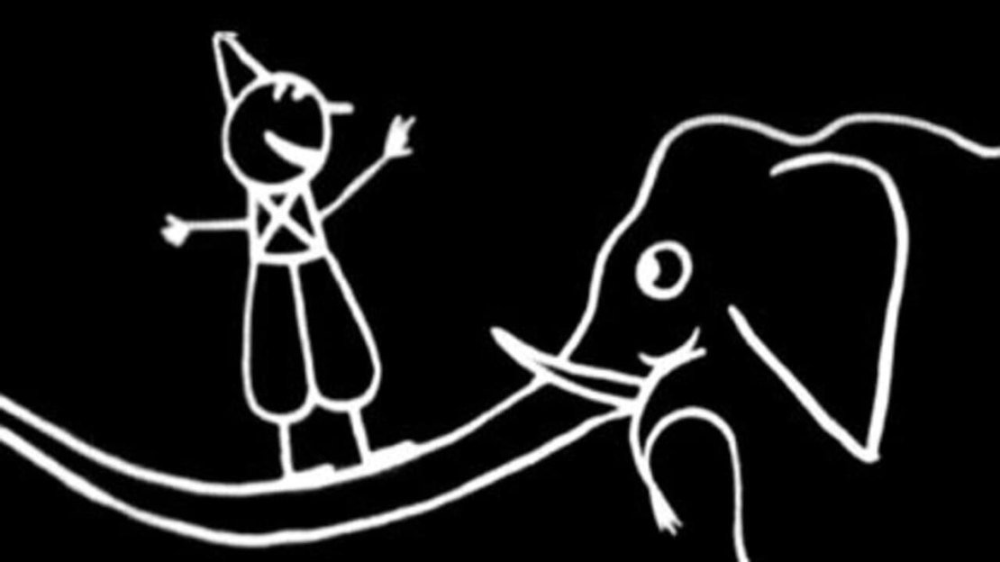

o que é?
A etmologia da palavra "animação" se dá por meio do latim, “animatio”, que significa, ser animado. Deriva da
palavra “anima”, traduzido como espírito ou alma.
Assim, animar seria dar a vida, dar sentido a algo antes
estático. o ato de animar comtemplaria vislumbrar uma nova perspectiva.
Mas o que é atribuído quando
falamos sobre termo?
O que de fato é "animação?
Um bom exemplo que podemos tomar, são os desenhos
animados, que, talvez sejam os maiores representadores da categoria, possuindo em seus traços a transposição
das mais diferentes técnicas ao longo do tempo.
Então podemos dizer que trata-se de uma arte, mas que
também ganha corpo de ciência se considerarmos as diferentes técnicas que já foram empregadas para que as
animações
ganhassem a relevância que têm hoje. Uma animação pode ter o formato de um filme, um
documentário, um pequeno vídeo e até mesmo de um comercial de televisão.

história
A animação se trantando de arte é tão antiga quanto o próprio cinema, que começou mudo mais de 100 anos
atrás, no início do século 20.
Na verdade, se levarmos em conta a origem de imagens animadas, poderíamos
dizer que a animação é ainda mais antiga, remontando ao ano 1832,
quando o belga Joseph Plateau criou o
brinquedo óptico que foi batizado de Fenaquistiscópio.
Entretanto, o primeiro desenho animado mais próximo do que nós conhecemos hoje,somente foi criado em 1892. O
francês Émile Reynaud criou o que é chamado de praxinoscópio.
Essas cenas eram projetadas em um anteparo,
algo que lembra muito o conceito de projetor atual. Por mais que essa criação de Émile Reynaud
seja
considerada por muitos como o primeiro desenho animado da história, outros contrapõem e acreditam que
Fantasmagorie, produção criada pelo também francês Émile Cohl,
levaria esse título. Essa animação utilizou
o processo de desenhos sequenciais para criar a ideia de continuidade na imagem – técnica usada até hoje na
animação.
A partir de então várias animações passaram a serem produzidas. O primeiro longa-metragem animado, por
exemplo, foi criado em 1917, pelo argentino Quirino Cristiani e foi chamada de El Apóstol.
Até chegarmos
nos contextos atuais foram efetuadas grandes mudanças ao longo do tempo, as quais certamente aconteceram com a
interferência tecnológica,
onde até mesmo novos estilos de animações foram fundados.

tipos
Na perspectiva presente, podemos dividir a animação em duas subdivisões enquanto a tipos, em questão de
métodos de produção.
As animações tradicionais e aquelas do tipo digitais.
As animações
tradicionais são aquelas em que o processo de criação é feito por meio de desenhos sequenciais,
geralmente feitos manualmente e um por vez.
Já as animações digitaissão as animações digitais
são aquelas produzidas e processadas por computação gráfica.
Os resultados dessa técnica, porém, podem ser
variados, e seria injustiça encaixar todas as formas de animação digital em uma única categoria.